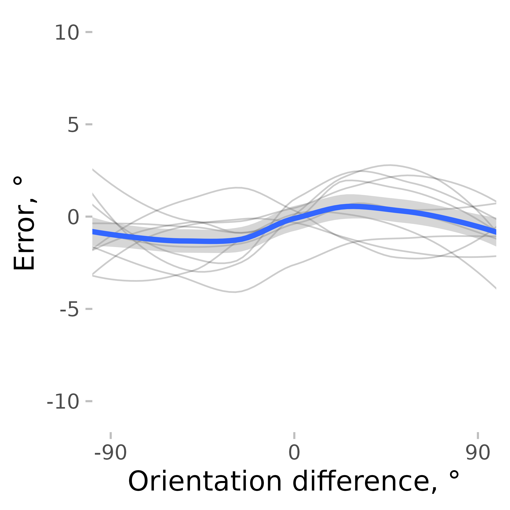
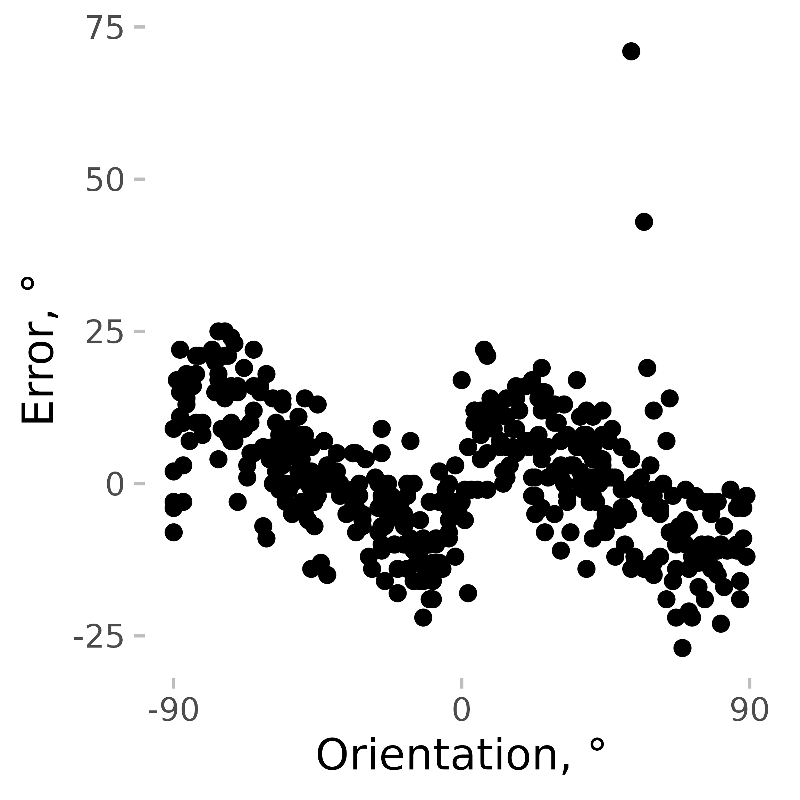
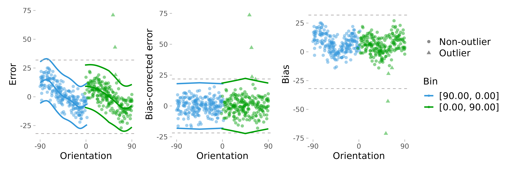
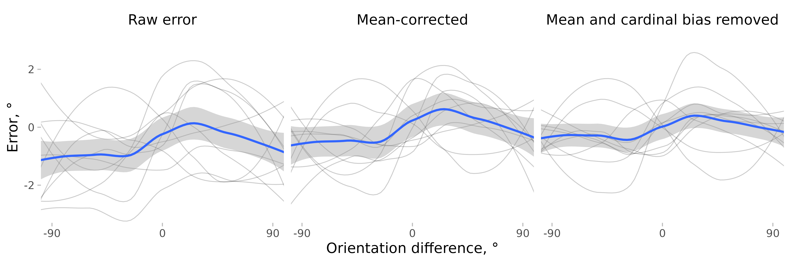
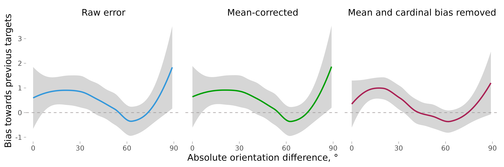

Correcting for cardinal biases to improve serial dependence estimates
Publication Date:
01/03/2022
Last updated: 04/10/2024
Source: vignettes/cardinal_biases.Rmd
cardinal_biases.RmdThis is a small vignette showing how correcting for cardinal biases might improve serial dependence (SD) estimates. I will use the data from Experiment 2 in Pascucci et al. (2019, PLOS Biology, https://dx.doi.org/10.1371/journal.pbio.3000144) available from https://doi.org/10.5281/zenodo.2544946. First, I load the data, the required packages, and compute important variables.
# load the data
# data <- fread('https://zenodo.org/record/2544946/files/Experiment2_rawdata.csv?download=1')
data <- Pascucci_et_al_2019_data
data[, err := angle_diff_180(reported, orientation)] # response errors
data[, prev_ori := shift(orientation), by = observer] # orientation on previous trial
data[, diff_in_ori := angle_diff_180(prev_ori, orientation)] # shift in orientations between trialsThe responses in this data show a typical SD pattern with a bias
towards previous orientations. I use the pad_circ function
to account for circularity in the data when smoothing. It adds part of
the data from one end to another end of the variable range (e.g., the
data with the relative orientation from 60 to 90° are copied and pasted
to the data set with the new relative orientation values of -120 to
90°). This is not the perfect way to account for circularity, but it is
good enough for this kind of analysis. The thin lines show individual
observers, and the thick blue line shows the average.
ggplot(pad_circ(data, "diff_in_ori"), aes(x = diff_in_ori, y = err)) +
geom_line(aes(group = observer), stat = "smooth", size = 0.4, color = "black", alpha = 0.2, method = "loess") +
geom_smooth(se = T, method = "loess") +
coord_cartesian(xlim = c(-90, 90)) +
scale_x_continuous(breaks = seq(-90, 90, 90)) +
labs(y = "Error, °", x = "Orientation difference, °")
#> `geom_smooth()` using formula = 'y ~ x'
#> `geom_smooth()` using formula = 'y ~ x'
But SD is not the only bias present. The orientation estimates usually show cardinal biases, that is, a repulsion effect with responses “repulsed away” from cardinal orientations. Here is an example observer where this pattern is clearly seen.
ggplot(data[observer == 4, ], aes(x = angle_diff_180(orientation, 0), y = err)) +
geom_point() +
coord_cartesian(xlim = c(-90, 90)) +
scale_x_continuous(breaks = seq(-90, 90, 90)) +
labs(y = "Error, °", x = "Orientation, °")
Cardinal biases (like any other biases) not only add noise to the data but can also mimic other biases, such as SD. For example, if an observer is presented with an 8° line followed by a 2° line, the estimates of the 2° line would be pushed towards 8° because of the cardinal bias, not solely because of SD. It’s not necessarily a problem for a well-balanced design, but it’s better to remove them to be on the safe side.
remove_cardinal_biases removes the cardinal biases and other similar
orientation-dependent idiosyncrasies by fitting a set of polynomials to
the data and computing the residuals. In other words, it tries to
predict how the errors change on average with changes in orientation and
removes that dependence. Additionally, it tries to estimate which
responses are outliers while accounting for changes in response variance
across orientations (see more in
remove_cardinal_biases()).
ex_subj_data <- data[observer == 4, ]
res <- remove_cardinal_biases(ex_subj_data$err, ex_subj_data$orientation, plots = "show")
To illustrate how it works, we can plot some output from this function. The first plot shows the errors the same way as in the previous plot but adds the fitted polynomials to them. The second one shows the errors with the biases removed. The third one plots only the bias (disregarding the sign of the average error).
Then, we can check how SD estimates are affected by the removal of cardinal biases. For the sake of completeness, I also show the result of removing the mean error only (which is close to nothing).
First, for each observer, I compute a corrected error and find the
trials likely to be the outliers. remove_cardinal_biases
returns a data.table object with multiple columns with the
most commonly used ones being the bias-corrected error
(be_c) and an outlier marker (is_outlier). I
save them in the data:
data[, c("err_corrected", "is_outlier") := remove_cardinal_biases(err, orientation)[, c("be_c", "is_outlier")], by = observer]As a comparison, we can just use a correction for the overall mean error.
data[, err_mean_corrected := angle_diff_180(err, circ_mean_180(err)), by = observer]Then, I plot these errors along with the raw errors as a function of the previous item orientation (with the outliers removed) and plot them.
datam <- melt(data[!is.na(diff_in_ori)], id.vars = c("diff_in_ori", "observer", "is_outlier"), measure.vars = c("err", "err_corrected", "err_mean_corrected"))
datam[, variablef := factor(variable, levels = c("err", "err_mean_corrected", "err_corrected"), labels = c("Raw error", "Mean-corrected", "Mean and cardinal bias removed"))]
datam[, err_rel_to_prev_targ := ifelse(diff_in_ori < 0, -value, value)]
ggplot(pad_circ(datam[is_outlier == F], "diff_in_ori"), aes(x = diff_in_ori, y = value)) +
geom_line(aes(group = observer), stat = "smooth", size = 0.4, color = "black", alpha = 0.2, method = "loess") +
geom_smooth(se = TRUE, method = "loess") +
facet_grid(~variablef) +
coord_cartesian(xlim = c(-90, 90), ylim = c(-3, 3)) +
scale_x_continuous(breaks = seq(-90, 90, 90)) +
labs(y = "Error, °", x = "Orientation difference, °")
#> `geom_smooth()` using formula = 'y ~ x'
#> `geom_smooth()` using formula = 'y ~ x'
To make things clearer, I plot serial dependence as a function of absolute orientation differences.
ggplot(datam[is_outlier == F], aes(
x = abs(diff_in_ori),
y = err_rel_to_prev_targ,
color = variablef
)) +
geom_hline(linetype = 2, yintercept = 0) +
geom_smooth(se = TRUE, method = "loess") +
facet_grid(~variablef) +
coord_cartesian(xlim = c(0, 90)) +
theme(legend.position = "none") +
labs(
color = NULL, y = "Bias towards previous targets",
x = "Absolute orientation difference, °"
) +
scale_x_continuous(breaks = seq(0, 90, 30))
#> `geom_smooth()` using formula = 'y ~ x'
As you can see, when estimated using error corrected for cardinal
bias, SD looks “better” in the sense that around zero (where no bias is
expected), the SD is closer to zero, and there is also less of a bump
around 90° (this bump is probably a result of the large error
variability / fewer data points in this dataset). Correcting for
cardinal biases also reduces the variability of the errors, making the
SD effect more pronounced. But note also that the confidence intervals
in these plots are not quite right as they do not account for
between-subject and within-subject variability properly. A better
approach is to bin the data or to smooth the data by subject and then
compute the confidence intervals. These approaches are illustrated in
vignette('serial_dependence_with_density_asymmetry').